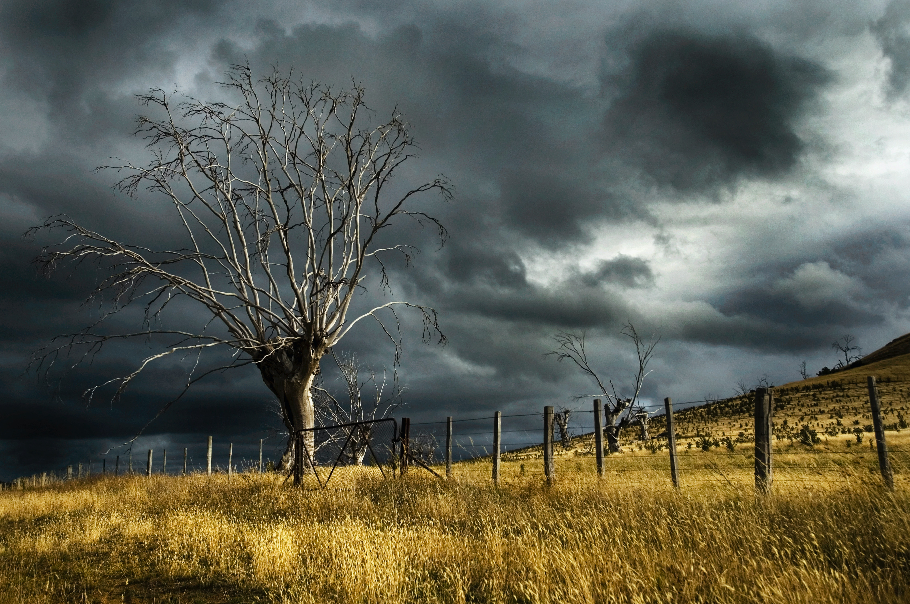

O clima no Brasil
O clima no Brasil é extremamente diversificado devido à sua vasta extensão territorial e diferentes características geográficas.
O Brasil é um país vasto e diversificado não apenas em termos de cultura e geografia, mas também quando se trata de seu clima. Devido à sua extensão territorial e localização geográfica variada, o Brasil apresenta uma ampla gama de condições climáticas, que vão desde regiões áridas até regiões equatoriais úmidas. Essa diversidade climática é um reflexo das diferentes zonas climáticas em que o país está inserido.
A diversidade climática do Brasil é um fator crucial que influencia a flora, fauna, economia e estilo de vida das pessoas em todo o país. A compreensão das características climáticas regionais é essencial para a gestão sustentável dos recursos naturais e para a adaptação às mudanças climáticas em um mundo cada vez mais interconectado. Portanto, reconhecer e apreciar a riqueza dessa diversidade climática é fundamental para o presente e o futuro do Brasil.

É importante destacar que a prevenção, mitigação e resposta a essas catástrofes climáticas exigem planejamento, políticas públicas adequadas, investimentos em infraestrutura resiliente e conscientização da população. A adaptação às mudanças climáticas também é fundamental para reduzir os riscos associados a esses eventos extremos.
A diversidade
A Região Norte do Brasil é caracterizada por seu clima equatorial e tropical úmido. Com altas temperaturas durante todo o ano e chuvas frequentes, a Amazônia brasileira é um exemplo de biodiversidade exuberante alimentada por essas condições climáticas. A umidade é uma constante, tornando a região um dos ecossistemas mais ricos do mundo.
No Nordeste brasileiro, encontramos uma mescla de climas tropicais e semiáridos. Enquanto a costa nordestina possui um clima tropical úmido, o interior enfrenta condições semiáridas, com chuvas escassas e irregulares. A região do sertão é conhecida por suas paisagens áridas, mas também abriga comunidades resilientes que aprenderam a lidar com a escassez de água.
O Centro-Oeste brasileiro apresenta um clima tropical, com estações secas e chuvosas bem definidas. O Cerrado, um dos principais biomas dessa região, adapta-se às flutuações sazonais, exibindo uma variedade única de flora e fauna adaptadas a essas condições.
A Região Sudeste abriga um clima tropical na maior parte de sua extensão, com áreas de transição para um clima subtropical em regiões mais elevadas. As estações do ano são mais marcadas nessa região, com verões quentes e chuvosos, e invernos mais frios e secos, especialmente em áreas como a Serra da Mantiqueira.
No Sul do Brasil, encontramos um clima subtropical na maior parte da região, com características temperadas em áreas mais elevadas. As quatro estações do ano são bem definidas, com invernos mais rigorosos e verões amenos. A ocorrência de geadas e até mesmo neve é mais comum em regiões serranas.